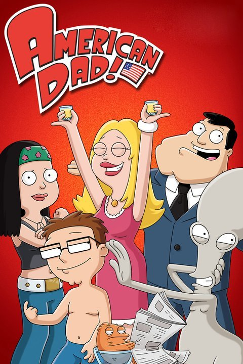

American Dad! (Aired 2005-)
Rating: 7.5/10
Age Restriction: TV-14
In this comedic cartoon, Stan Smith, a patriotic CIA agent, goes through everyday life trying to keep his family and America safe in ridiculous situations.
Creators: Mike Barker, Seth MacFarlane, Matt Weitzman
Cast
Seth MacFarlane as .... Stan Smith | Roger
Wendy Schaal as .... Francine Smith
Dee Bradley Baker as .... Klaus
Scott Grimes as .... Steve Smith
Rachael MacFarlane as .... Hayley Smith
Mike Barker as .... Terry Bates
Curtis Armstrong as .... Snot Lonstein